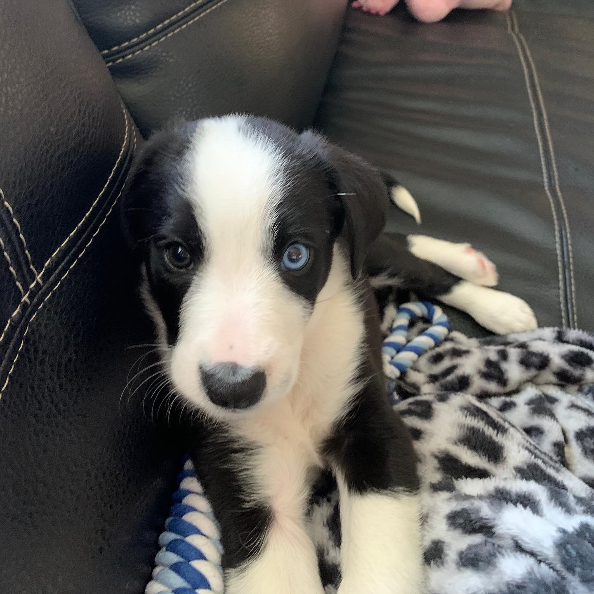
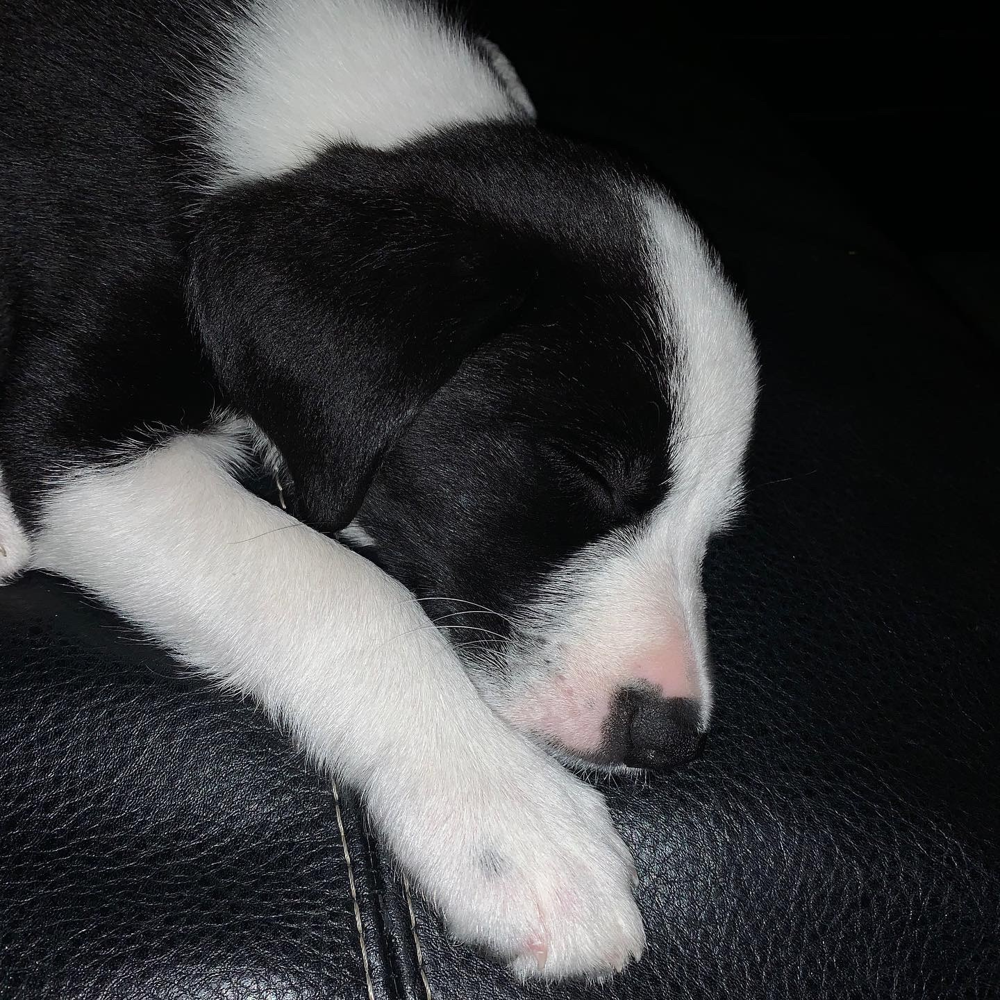

In August, we added a new member to the family. Though not a hobby, Coco has taken up a lot of my time and I have enjoyed every waking moment of it.


From the homepage, you can tell I am a legendary gamer (just kidding). However, I have been playing video games for that long, I don't remember when I started. One of my favourite games as a kid was Grand Theft Auto: San Andreas. It is one of the best games ever made, as you must know.
Other games from my childhood include Age of Empires 2, Age of Empires 3, World of Warcraft and Runescape (before it became Runescape 3).
Currently, I am having a break from Gaming but when I do play, I play Dota 2 (especially when the International starts), World Of Warcraft (on and off) and Old School Runescape (when i'm bored).
I also enjoy a good fantasy title, specifically, Total War: Warhammer and Warhammer 2, though, I do have to be in the mood to play it.
I very recently bought the FC100 Classical Guitar from Fender. Although I have only just starting learning (and don't get much time to practice), I have found that it is one of my most satisfying hobbies when I start getting the hang of a song. Thus far, I have only learnt Say You Won't Let Go by James Arthur.